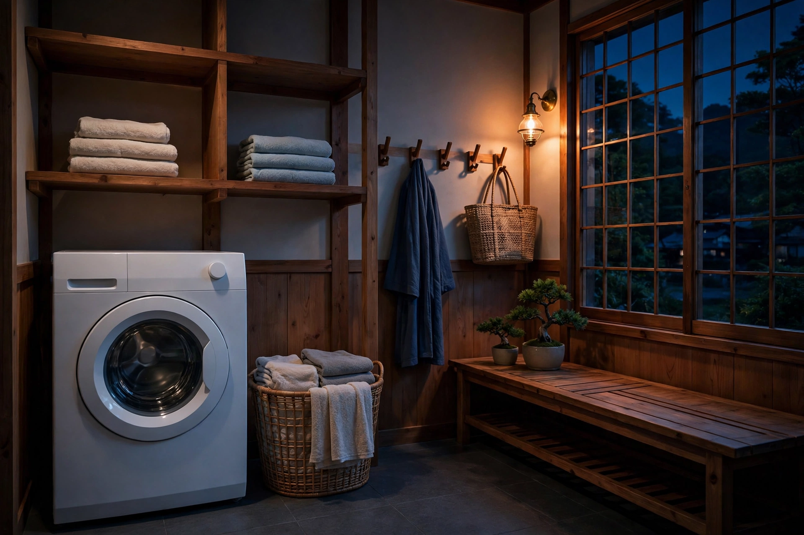

📊 Hzの目安
洗濯機の音は、行程が進むにつれて姿を変えます。あくまで目安として、振動まわりの低い音が中心になることが多く、この記事では40～800Hzあたりを目安にしています。ただし、回転音や水の音はもっと広い帯域に広がり、機種や設置場所、建物の構造で聞こえ方は大きく変わります。単一のHzで決めつけることはできません。
20Hz40～800Hz5000Hz
この記事の要点
- 洗濯機の音は「ずっと同じ音」ではなく、洗い・すすぎ・脱水と、行程ごとに性質が変わります。
- いちばん目立つのは脱水のピーク。振動が床や壁を伝う「固体伝搬」で、離れた部屋にも届きます。
- マスキングは、一定した運転音には合わせやすい一方、脱水の急なピークは紛らわせにくい面があります。
- 自分の家の洗濯機なら防振・設置・時間帯の見直しが先。隣の家の音なら、マスキングと記録・相談が軸です。
⏱ 急いでいる人へ ― 今夜やること3つ
📖 目次
🔊 洗濯機の音の正体
洗濯機の音は、ひとつの音が鳴り続けるのではなく、行程ごとに入れ替わります。
| 行程 | 音の正体 | 特徴 |
|---|---|---|
| 洗い | モーターの回転音と、水をかき混ぜる音 | 低い回転音に水音が重なる。比較的おだやか |
| すすぎ | 給水・排水の音、ポンプの音、回転音 | 水の流れる音が加わる |
| 脱水 | 高速回転による唸りと、本体の振動 | 全行程で最大。洗濯物の偏りで大きさが大きく変わる |
| 乾燥 | 温風ファンの送風音とドラムの回転音 | 一定の送風音が長く続く |
厄介なのは、空気を伝わる音だけではありません。脱水時の振動は、本体の脚から床へ、壁や配管へと伝わる固体伝搬で広がり、ドアを閉めても弱まりにくく、「音というより響き」として感じられることがあります。
帯域の目安は、低い音を中心に40～800Hzあたり。あくまで目安で、実際は機種・設置・建物で大きく変わります。
なぜ気になるのか
理由のひとつは、音が途中で変わることです。洗いの穏やかな音に慣れたころ、脱水が始まって急に大きな振動が来る。この落差があると、耳は変化を追い続けてしまいます。「静か→大きい」を繰り返す音は、一定の音より意識から離れにくいのです。
もうひとつは時間帯です。洗濯は、帰宅後の夜や出かける前の早朝に回されがちな家事で、周りがいちばん静かになる時間帯に、脱水のピークが重なりやすいのです。昼間なら埋もれる運転音も、背景の音（暗騒音）が下がる深夜には大きく感じられます。機械が夜だけうるさくなるわけではありません。
🎧 マスキング音の考え方
洗い〜すすぎの区間は、比較的一定した運転音が続きます。この区間には、似た帯域の一定した音を控えめに重ねて背景になじませる方法が合う場合があります。
一方、脱水のピークは話が別です。急に大きくなる振動に合わせてマスキング音を上げると、普段の区間ではうるさすぎる音になります。脱水は数分間の「山」と割り切り、一定した区間をなじませることを優先するのが現実的です。なお、マスキングは機械の音そのものを消すものではありません。
🎛 効かせるための使い方
音の選び方
中心が低い帯域なので、マスキング音も低音中心で変化の少ない一定音が向いています。メロディのある音楽より、ノイズ系の音のほうが背景になじみやすい傾向があります。
再生機器と置き方
スマートフォン本体のスピーカーは、構造上、低い音を出すのが苦手です。「流しているのに効かない」という場合は、機器の側で肝心の帯域が出ていないことがあります。低音の出る外部スピーカーや、イヤホンで試してみてください。置き場所は、音の入り口側――洗濯機のある方向の壁やドアの近く――がおすすめです。
音量の目安
目安は、気になる音が「背景に溶けた」と感じる最小限の音量です。上げすぎると、今度はマスキング音自体が負担になります。
🏠 自分の家の洗濯機が響いている場合
「自分の洗濯機の音が、隣や下の階に響いていないか」と心配な場合は、マスキングではなく音源側の工夫が本筋です。自分の部屋でマスキング音を流しても、隣への音漏れは減らないからです。
防振の見直し
脱水の振動は、本体の脚から床へ伝わります。脚の下の防振ゴムや防振マットが劣化していないか、かさ上げ台がぐらついていないかを確認してみてください。
設置の見直し
本体が傾いていないか、壁や周りの物に接していないかも響きに影響します。接している部分があると、そこから振動が建物側へ伝わりやすくなります。洗濯物の偏りも大きな振動の原因になるため、詰め込みすぎを避けることも大切です。
時間帯の工夫
タイマー予約は、「始まる時間」ではなく「脱水が終わる時間」を基準に考えると、ピークが深夜に重なるのを避けやすくなります。自分の音全般は自分の音の対策へ。
🔁 効かないときの次の一手
- 記録をつける ― 「何時ごろに始まって、どの行程が気になるか」を数日分メモしておくと、生活側の調整にも相談にも役立ちます。付け方は騒音の記録シートを参考にしてください
- 管理会社への相談を検討する ― 隣の家の音で生活に支障が出ている場合は、直接の交渉ではなく管理会社を通すのが一般的な順番です。進め方は騒音に悩んだときの相談の流れへ
- 耳栓と併用する ― 振動の成分は耳栓では止まりにくいものの、回転音などの輪郭は和らぐ場合があります（耳栓とマスキング音の併用）
- 自分の家の機械の異音なら点検を ― 以前より急に振動が大きくなった、金属音が混ざるといった変化は、故障の可能性もあります。紛らす前に、メーカーや管理会社への相談をご検討ください
🚫 やってはいけないこと
- マスキング音を大音量で流す ― 音量を上げ続けると、今度は自分の音が周囲への騒音になりかねません。控えめな音量で効かない場合は、音量ではなく機器や置き場所の見直しが先です
- 隣の家の洗濯機や設置場所に勝手に触る ― 他人の設備には手を入れられません。気になる場合は、管理会社を通じて伝えるのが順番です
- 賃貸住宅で、床や壁に大きな変更を加える ― 防音・防振の工事や大きな変更は、契約上の問題になることがあります。先に管理会社へ相談してください
❓ よくある質問
- Q. 脱水のときだけ、急にうるさくなるのはなぜですか？
- A. 脱水は洗濯槽を高速で回す行程で、振動がいちばん大きくなるためです。とくに回転が上がり始める時間帯は洗濯物の偏りの影響を受けやすく、大きな音が出やすいと言われます。
- Q. 深夜に洗濯を回す側です。何に気をつければいいですか？
- A. いちばん効くのは時間帯の調整です。脱水のピークが深夜に重ならないよう、開始時刻やタイマー予約を見直してみてください。防振ゴムの状態や本体の傾きなど、設置まわりの確認もおすすめです（詳しくは自分の家の洗濯機が響いている場合へ）。
- Q. 自分の部屋でマスキング音を流せば、隣への音漏れも減りますか？
- A. 減りません。マスキングは聞く側の聞こえ方を変える方法で、音源の音や振動を弱めるものではないからです。自分の音が心配な場合は、防振や設置、時間帯の工夫をご検討ください。
⚠️ 注意
異常な振動や異音が疑われる場合は、メーカーや管理会社への相談をご検討ください。このサイトは、家電の修理や点検のアドバイスをするものではありません。帯域や対策は目安であり、効果の感じ方には個人差・環境差があります。